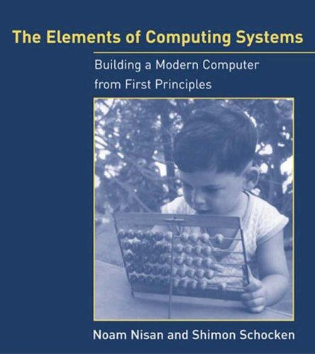
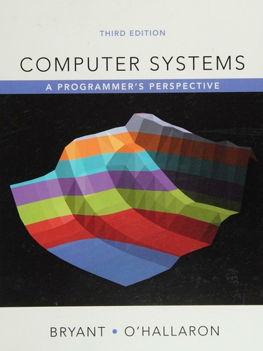
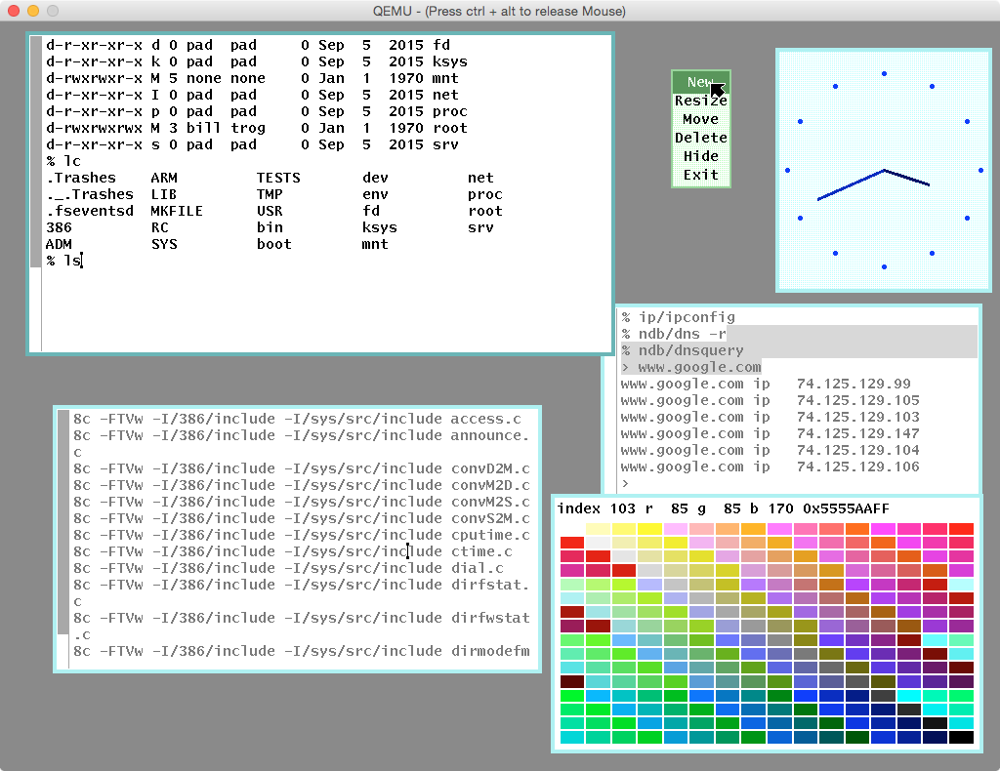
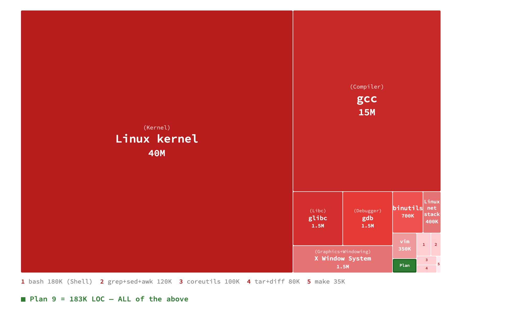
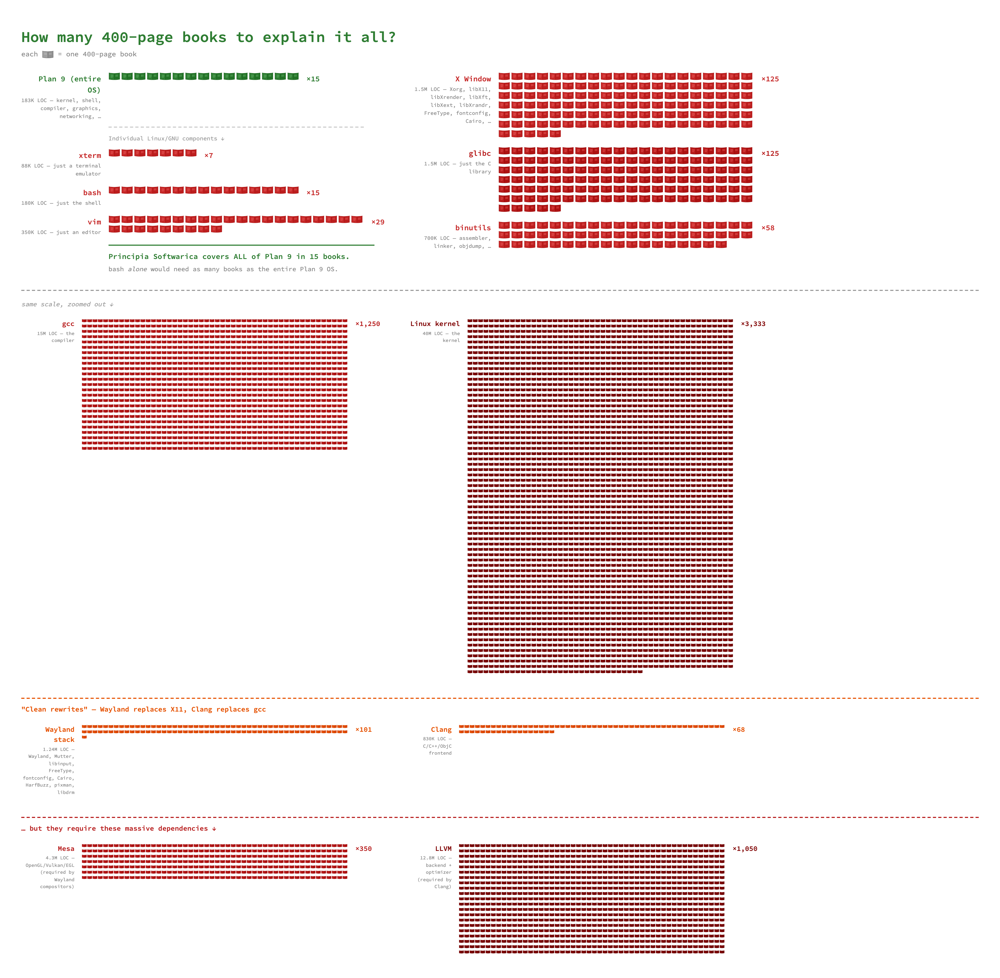
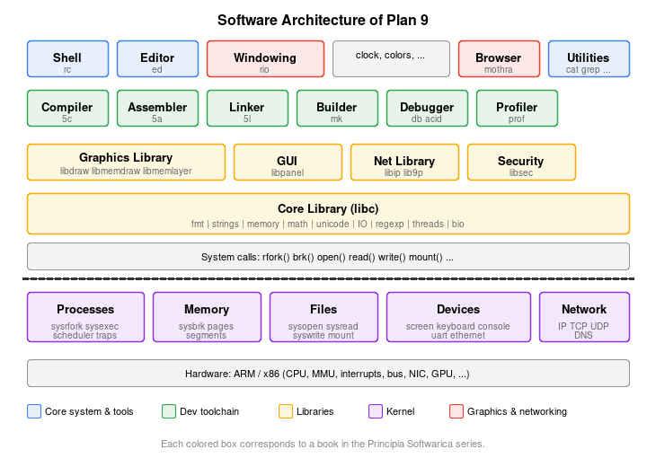

Fundamental Literate System Programs
What's New · Why Principia? · Introduction · The Books · Plan 9 · Source Code · OCaml Ports · Related Work · Getting Started · FAQ
Principia Softwarica is a series of books explaining how things work in a computer by describing with full details all the source code of all the essential programs used by a programmer. All the programs come from Plan 9 from Bell Labs, an operating system designed as the successor to Unix whose code is remarkably elegant and small.
Among those essential programs are the kernel, the shell, the windowing system, the compiler, the linker, the editor, and the debugger. Each program is covered by a separate book (see the full list).
The books not only describe the implementations of essential programs — they are the implementations. Each program comes from a literate program, a document containing both source code and documentation where the code is organized and presented to facilitate comprehension. The actual code and the book are both derived automatically from this literate program. (See more about literate programming.)
What happens when you type ls in a terminal window?
Keith Adams — a colleague at Facebook, later Chief Architect
at Slack — used this as his interview question.
It is a simple question, but the answer involves the shell, the
C library, the kernel, the graphics stack, and the windowing system.
Most engineers cannot answer it fully.
(See The Journey of ls
for the complete trace.)
Today, "full stack" usually means React + Node + cloud. But the real full stack is the compiler, the linker, the kernel, and the system calls underneath. There are excellent textbooks that explain the concepts behind these programs, but almost none that show the actual source code. Principia fills that gap.
AI coding tools use the very programs that Principia explains.
They run grep, sed, diff,
awk, gcc, ld hundreds of
times a day.
If writing code is 20% of the job and understanding is 80%,
AI is handling the 20%. The 80% — understanding what the code
actually does, all the way down to the hardware — becomes
everything.
Machines recently went through deep learning.
It is time for humans to do so too.
LOC = lines of code; LOE = lines of explanation; Pages = typeset pages.
| Category | Book | Program(s) | LOC | LOE | LOE/ LOC |
Pages | Version |
|---|---|---|---|---|---|---|---|
| Core system | Kernel | 9pi | 35029 | 8389 | 0.24 | 808 | v10 |
| Core libraries | libc libthread libbio | 19000 | 1600 | 0.08 | 438 | v2 | |
| Shell | rc | 6500 | 3324 | 0.51 | 234 | v7 | |
| Development toolchain | C compiler | 5c libcc | 18500 | 1900 | 0.10 | 471 | v3 |
| Assembler | 5a | 3600 | 4400 | 1.22 | 176 | v5 | |
| Linker | 5l | 7500 | 5400 | 0.72 | 296 | v7 | |
| Developer tools | Editor | ed | 1597 | 668 | 0.42 | 45 | v1 |
| Build system | mk | 4350 | 4050 | 0.93 | 197 | v6 | |
| Debuggers | db acid strace libmach | 13100 | 1000 | 0.08 | 321 | v2 | |
| Profilers | prof time kprof stats iostats | 3921 | 1642 | 0.42 | 127 | v2 | |
| Graphics | Graphics stack | libdraw libmemdraw libmemlayer libimg | 18500 | 3400 | 0.18 | 507 | v3 |
| Windowing system | rio libframe libcomplete libplumb | 8800 | 4000 | 0.45 | 289 | v6 | |
| GUI toolkit | libpanel | 3749 | 2276 | 0.61 | 149 | v2 | |
| Networking | Network stack | libip lib9p | 18300 | 4800 | 0.26 | 457 | v3 |
| Misc | CLI utilities | cat ls grep sed diff tar gzip bc dc hoc awk ... | 23900 | 650 | 0.03 | 493 | v1 |
| Emulator | 5i | 3176 | 2281 | 0.72 | 134 | v4 | |
| Total | 186304 | 42492 | 0.23 | 4900 |
The LOE/LOC column shows the ratio of lines of explanation to lines of code. The goal is to reach a ratio of 1.0 for every book, meaning each line of code is matched by a line of explanation. Green means the book is close to that goal, yellow means it is getting there, and red means more writing is needed.
Plan 9 was chosen because you can realistically understand the entire operating system. The code is written in a clean, consistent C style, and the system design follows a few powerful ideas (everything is a file, per-process namespaces, network transparency) applied uniformly.
It is not as fancy as macOS or Windows, but in essence Plan 9 provides the same core services: a kernel managing processes and memory, a windowing system, a shell, a compiler, networking, and graphical applications. Here it is running under QEMU:

How small is Plan 9? The treemap below compares the size of Linux programs (in red) with their Plan 9 equivalents (in green). The entire Plan 9 system — kernel, compiler, shell, windowing system, and all the rest — fits in 183K lines of code, almost 2x smaller than just vim (350K). This is what makes it possible to explain every line in a book series.

Lines of code can be abstract, so to make things more concrete:
if each 400-page book covers roughly 12K lines of code,
Principia covers all of Plan 9 in about 15 books.
A single Linux program like gdb would need ten times
more books, and gcc a hundred times more.

Even "clean rewrites" do not help: Wayland, the modern replacement for X11, is just as large. Clang, the modern replacement for GCC, is even larger. Rewriting does not make programs smaller — the Plan 9 approach of designing for simplicity from the start does.
You do not need to use Plan 9.
Understanding one small elegant OS gives deep intuition about
Linux, macOS, and even Windows.
Many Plan 9 ideas are already everywhere:
UTF-8 was invented by Thompson and Pike for Plan 9,
/proc comes from Plan 9,
Linux namespaces (the basis of Docker and containers) come from Plan 9,
the Go language was created by Pike and Thompson with goroutines
inspired by Plan 9's libthread,
and the 9P protocol is used in WSL2.
The programs Principia explains —
grep, sed, awk,
diff, cc, ld —
are the same tools every programmer uses daily.
Same concepts, expressed 100x more clearly in Plan 9.
And you can use them for real: plan9port
brings the Plan 9 userland (grep, sed, awk) to Linux and macOS,
and goken9cc
lets you use the Plan 9 C toolchain from Linux, macOS, or Windows
to produce native binaries for those platforms.
The diagram below shows how the different components of Plan 9 are organized, from applications at the top to hardware at the bottom. Each colored box corresponds to a book in the series.

See The Journey of ls
for a trace of a simple command through every layer of the system,
showing how the books connect together.
The source code for the Plan 9 fork used in Principia Softwarica is available on GitHub:
See Getting Started for instructions on how to build and run Plan 9 using Docker or from source.
Some Plan 9 programs have been ported to OCaml, a statically-typed functional language. The original motivation was to better understand the C code — porting a program to another language forces you to discover which parts are essential and which are accessory, and the bugs in the port reveal hidden subtleties in the original.
The ports turned out to be useful on their own. OCaml code is roughly 2x more succinct than C, arguably clearer, and safer (no segfaults or buffer overflows). The OCaml programs are also portable: unlike the Plan 9 C code, they run on Linux, macOS, and Windows without extra effort.
The OCaml ports live in the XIX project (xix, efuns, and mmm), each with their own literate programming books.
| Category | Book | Program | Ported from | LOC | LOE | LOE/ LOC |
Pages | Version |
|---|---|---|---|---|---|---|---|---|
| Core system | Shell | orc | rc | 2150 | 2310 | 1.07 | 126 | v2 |
| Development toolchain | C compiler | occ | 5c | 6250 | 850 | 0.14 | 173 | v1 |
| Assembler | oas | 5a | 1750 | 350 | 0.20 | 76 | v1 | |
| Linker | olk | 5l | 2650 | 500 | 0.19 | 96 | v1 | |
| OCaml compiler | ocaml-light | ocamlc/ocamlrun | 16300 | 2250 | 0.14 | 500 | v3 | |
| Lex and Yacc | olex, oyacc | lex, yacc | 3500 | 800 | 0.23 | 111 | v3 | |
| Developer tools | Editor | oed | ed | 1500 | 350 | 0.23 | 55 | v1 |
| Editor (advanced) | efuns | Emacs | 5500 | 4600 | 0.84 | 175 | v6 | |
| Build system | omk | mk | 2750 | 1400 | 0.51 | 112 | v1 | |
| Version control | ogit | git | 5600 | 4400 | 0.79 | 202 | v10 | |
| Graphics | Windowing system | orio | rio | 3300 | 550 | 0.17 | 123 | v1 |
| Networking | Web browser | mmm | 22350 | 2450 | 0.11 | 499 | v3 |
Principia Softwarica complements three classic books:
|
Project Oberon (Wirth & Gutknecht) is the closest in spirit to Principia: it presents an entire operating system with full source code, including a compiler and a windowing system. However, Oberon can only run Oberon programs — like Smalltalk, it is a beautiful self-contained world, but an isolated one. Plan 9 (and Unix) are universal: they can compile and run programs written in any language. Oberon also lacks networking and runs on custom hardware. Principia covers a wider range of programs (compiler, linker, shell, debugger, graphics, networking) on a real-world OS. |
 |
The Elements of Computing Systems (Nisan & Schocken), also known as Nand2Tetris, builds a computer from NAND gates all the way up to Tetris. It is a wonderful pedagogical achievement, but the hardware and software are purpose-built for the course — a toy CPU, a toy OS, a toy language. Principia takes the opposite approach: it explains a real operating system with real code that runs on real hardware. |
 |
Computer Systems: A Programmer's Perspective (Bryant & O'Hallaron), known as CS:APP, is an excellent textbook that explains the concepts behind systems programming: memory layout, linking, virtual memory, concurrency. But it stops at concepts — it does not show the source code of a real kernel, a real linker, or a real compiler. Principia complements CS:APP by showing exactly that source code, explained line by line. |
Principia Softwarica is written by Yoann Padioleau, with code from Ken Thompson, Rob Pike, Dave Presotto, Phil Winterbottom, Tom Duff, Andrew Hume, Russ Cox, Xavier Leroy, Fabrice Le Fessant, and Francois Rouaix.
Contact: yoann.padioleau@gmail.com
Similar to Principia Mathematica, which covers the foundations of mathematics, the goal of Principia Softwarica is to cover the fundamental programs.